Dividing Polynomials
The exterior of the Lincoln Memorial in Washington, D.C., is a large rectangular solid with length 61.5 meters (m), width 40 m, and height 30 m.National Park Service. "Lincoln Memorial Building Statistics." http://www.nps.gov/linc/historyculture/lincoln-memorial-building-statistics.htm. Accessed 4/3/2014 We can easily find the volume using elementary geometry.
So the volume is 73,800 cubic meters Suppose we knew the volume, length, and width. We could divide to find the height.
As we can confirm from the dimensions above, the height is 30 m. We can use similar methods to find any of the missing dimensions. We can also use the same method if any or all of the measurements contain variable expressions. For example, suppose the volume of a rectangular solid is given by the polynomial The length of the solid is given by the width is given by To find the height of the solid, we can use polynomial division, which is the focus of this section.
Using Long Division to Divide Polynomials
We are familiar with the long division algorithm for ordinary arithmetic. We begin by dividing into the digits of the dividend that have the greatest place value. We divide, multiply, subtract, include the digit in the next place value position, and repeat. For example, let’s divide 178 by 3 using long division.
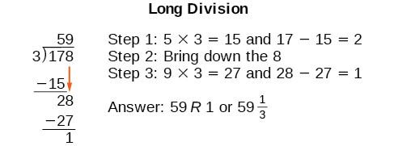
Another way to look at the solution is as a sum of parts. This should look familiar, since it is the same method used to check division in elementary arithmetic.
We call this the Division Algorithm and will discuss it more formally after looking at an example.
Division of polynomials that contain more than one term has similarities to long division of whole numbers. We can write a polynomial dividend as the product of the divisor and the quotient added to the remainder. The terms of the polynomial division correspond to the digits (and place values) of the whole number division. This method allows us to divide two polynomials. For example, if we were to divide by
using the long division algorithm, it would look like this:
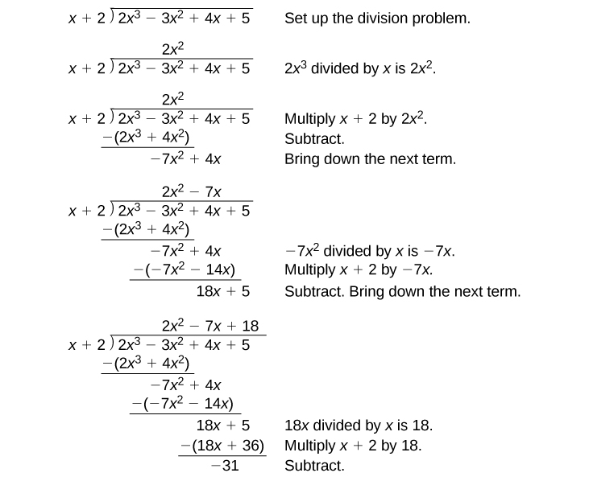
We have found
or
We can identify the dividend, the divisor, the quotient, and the remainder.
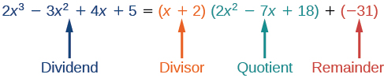
Writing the result in this manner illustrates the Division Algorithm.
Using Long Division to Divide a Second-Degree Polynomial
Divide by
Solution
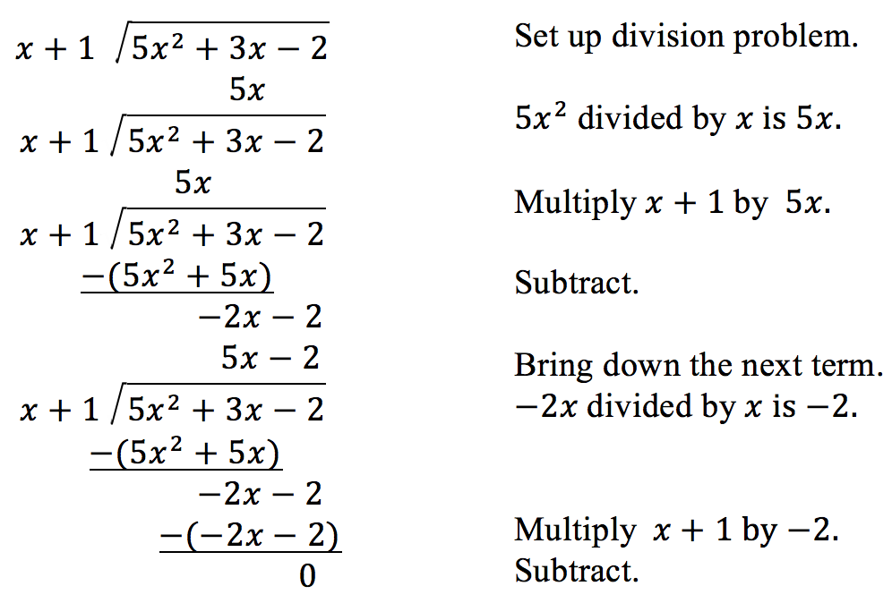
The quotient is The remainder is 0. We write the result as
or
Using Long Division to Divide a Third-Degree Polynomial
Divide by
Solution
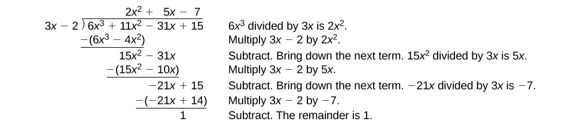
There is a remainder of 1. We can express the result as:
Analysis
We can check our work by using the Division Algorithm to rewrite the solution. Then multiply.
Notice, as we write our result,
- the dividend is
- the divisor is
- the quotient is
- the remainder is
Using Synthetic Division to Divide Polynomials
As we’ve seen, long division of polynomials can involve many steps and be quite cumbersome. Synthetic division is a shorthand method of dividing polynomials for the special case of dividing by a linear factor whose leading coefficient is 1.
To illustrate the process, recall the example at the beginning of the section.
Divide by using the long division algorithm.
The final form of the process looked like this:
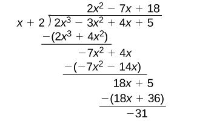
There is a lot of repetition in the table. If we don’t write the variables but, instead, line up their coefficients in columns under the division sign and also eliminate the partial products, we already have a simpler version of the entire problem.
Synthetic division carries this simplification even a few more steps. Collapse the table by moving each of the rows up to fill any vacant spots. Also, instead of dividing by 2, as we would in division of whole numbers, then multiplying and subtracting the middle product, we change the sign of the “divisor” to –2, multiply and add. The process starts by bringing down the leading coefficient.
We then multiply it by the “divisor” and add, repeating this process column by column, until there are no entries left. The bottom row represents the coefficients of the quotient; the last entry of the bottom row is the remainder. In this case, the quotient is and the remainder is The process will be made more clear in Example 3.
Using Synthetic Division to Divide a Second-Degree Polynomial
Use synthetic division to divide by
Solution
Begin by setting up the synthetic division. Write and the coefficients.
Bring down the lead coefficient. Multiply the lead coefficient by
Continue by adding the numbers in the second column. Multiply the resulting number by Write the result in the next column. Then add the numbers in the third column.
The result is The remainder is 0. So is a factor of the original polynomial.
Analysis
Just as with long division, we can check our work by multiplying the quotient by the divisor and adding the remainder.
Using Synthetic Division to Divide a Third-Degree Polynomial
Use synthetic division to divide by
Solution
The binomial divisor is so Add each column, multiply the result by –2, and repeat until the last column is reached.
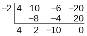
The result is The remainder is 0. Thus, is a factor of
Analysis
The graph of the polynomial function in Figure 2 shows a zero at This confirms that is a factor of
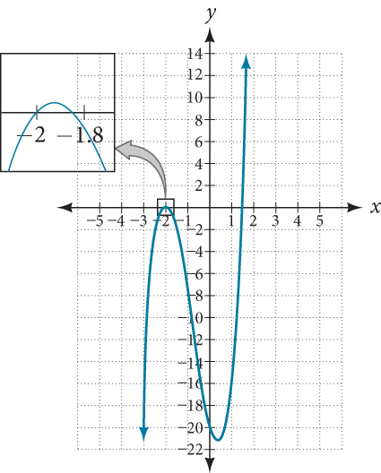
Using Synthetic Division to Divide a Fourth-Degree Polynomial
Use synthetic division to divide by
Solution
Notice there is no x-term. We will use a zero as the coefficient for that term.
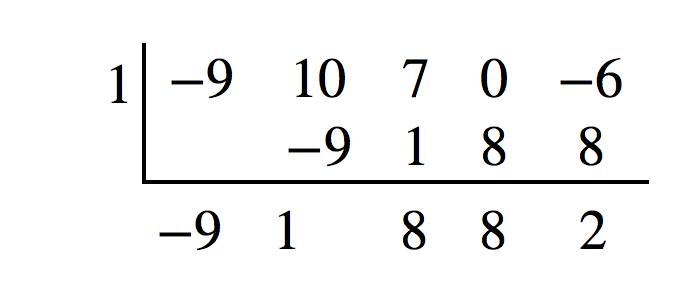
The result is
Using Polynomial Division to Solve Application Problems
Polynomial division can be used to solve a variety of application problems involving expressions for area and volume. We looked at an application at the beginning of this section. Now we will solve that problem in the following example.
Using Polynomial Division in an Application Problem
The volume of a rectangular solid is given by the polynomial The length of the solid is given by and the width is given by Find the height of the solid.
Solution
There are a few ways to approach this problem. We need to divide the expression for the volume of the solid by the expressions for the length and width. Let us create a sketch as in Figure 3.
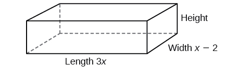
We can now write an equation by substituting the known values into the formula for the volume of a rectangular solid.
To solve for first divide both sides by
Now solve for using synthetic division.
The quotient is and the remainder is 0. The height of the solid is
Key Equations
| Division Algorithm | where |
Key Concepts
- Polynomial long division can be used to divide a polynomial by any polynomial with equal or lower degree. See Example 1 and Example 2.
- The Division Algorithm tells us that a polynomial dividend can be written as the product of the divisor and the quotient added to the remainder.
- Synthetic division is a shortcut that can be used to divide a polynomial by a binomial in the form See Example 3, Example 4, and Example 5.
- Polynomial division can be used to solve application problems, including area and volume. See Example 6.
Section Exercises
Verbal
If division of a polynomial by a binomial results in a remainder of zero, what can be conclude?
Solution
The binomial is a factor of the polynomial.
If a polynomial of degree is divided by a binomial of degree 1, what is the degree of the quotient?
Algebraic
For the following exercises, use long division to divide. Specify the quotient and the remainder.
Solution
, quotient: , remainder:
Solution
, quotient: , remainder:
Solution
, quotient: , remainder:
Solution
, quotient: , remainder:
Solution
, quotient: , remainder:
Solution
, quotient: , remainder:
For the following exercises, use synthetic division to find the quotient.
Solution
Solution
Solution
Solution
Solution
Solution
Solution
Solution
Solution
Solution
Solution
Solution
For the following exercises, use synthetic division to determine whether the first expression is a factor of the second. If it is, indicate the factorization.
Solution
Yes
Solution
Yes
Solution
No
Graphical
For the following exercises, use the graph of the third-degree polynomial and one factor to write the factored form of the polynomial suggested by the graph. The leading coefficient is one.
Factor is
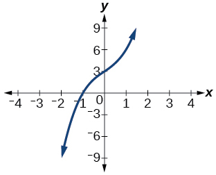
Factor is
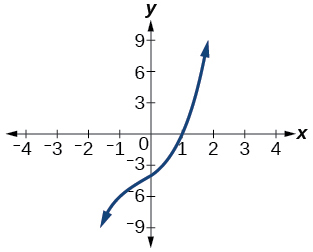
Solution
Factor is
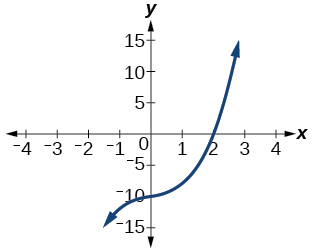
Factor is
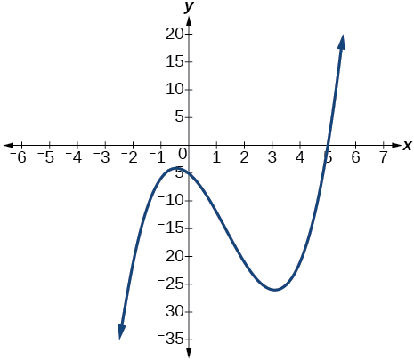
Solution
Factor is
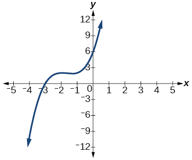
For the following exercises, use synthetic division to find the quotient and remainder.
Solution
Quotient: , remainder:
Solution
Quotient: , remainder:
Solution
Quotient: , remainder:
Technology
For the following exercises, use a calculator with CAS to answer the questions.
Consider with ,, What do you expect the result to be if
Consider for ,, What do you expect the result to be if
Solution
Consider for ,, What do you expect the result to be if
Consider with ,, What do you expect the result to be if
Solution
Consider with ,, What do you expect the result to be if
Extensions
For the following exercises, use synthetic division to determine the quotient involving a complex number.
Solution
Solution
Solution
Real-World Applications
For the following exercises, use the given length and area of a rectangle to express the width algebraically.
Length is area is
Length is area is
Solution
Length is area is
For the following exercises, use the given volume of a box and its length and width to express the height of the box algebraically.
Volume is length is width is
Solution
Volume is length is width is
Volume is length is width is
Solution
Volume is length is width is
For the following exercises, use the given volume and radius of a cylinder to express the height of the cylinder algebraically.
Volume is radius is
Solution
Volume is radius is
Volume is radius is
Solution
Analysis
This division problem had a remainder of 0. This tells us that the dividend is divided evenly by the divisor, and that the divisor is a factor of the dividend.